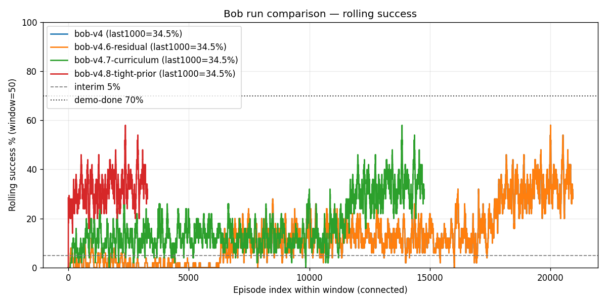
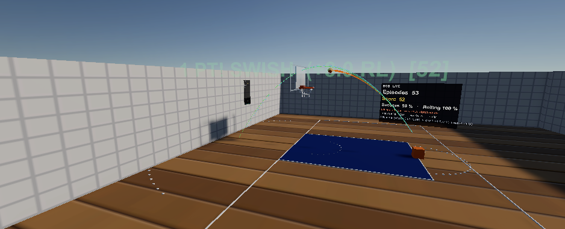

Where we started
June 2026: Unity 6 HDRP lab, one orange cube, one hoop, PPO via
ML-Agents. The first honest training run after we fixed episode
termination — bob-v4 — was 5 makes in 1,001 shots
(0.50%). The policy could aim generally toward the hoop. It
almost never finished the skill.
Worse, early episodes ran until the ball bounced out of bounds. A per-step distance penalty dominated. The sparse make reward (+3, later +8) almost never arrived, so PPO optimized apex height and “near the rim,” not baskets. Arc quality on the HUD went up. Makes did not.
What “a make” actually is
HoopScoreZone is a cylinder in the rim. Credit only if
world velocity is downward (v.y ≤ −0.5). Sideways skims
and upward pokes are misses. Swish is VFX only — same +1 basketball
point as a rim-in. That is the MDP. If scoring were “close enough,”
the graphs would lie.
The method that finally moved the needle
- Shot-resolved episodes — end on make, rim-plane miss, floor, settled, or timeout. Stop farming bounces.
- Reward contrast — a miss that looks pretty must not pay more than a make. We measured “positive-miss” rate and killed dense terms that failed the gate (57%, then 35%, then 0.2%).
-
Analytic prior + residual PPO —
BobSwishLaunchSolversolves a 56° high-arc impulse (gravity, lip clearance, damping). The policy outputs(c0, c1, c2)as a clamped residual, not a raw cannon. - Behavioral cloning of makes, then a distance curriculum (hoop slides closer on Z; Bob stays on the free-throw line).
- Tighter residual band (v4.8) — stay near the solved manifold. Session 34.43%, trailing-1k 34.5%. Play InferenceOnly matched at ~31–35%.

The numbers (do not flatten this table)
| Run | What changed | Success |
|---|---|---|
bob-v4 |
Shot-resolved episodes | 0.50% |
v4.1–v4.4 |
Economics, BC of near-misses | ~1.2% |
v4.6 residual |
Solver + PPO residual | 2.08% |
v4.7 curriculum |
Retuned solver, make-hunt BC, hoop curriculum | 10.93% |
v4.8 tight-prior |
Smaller residual, stronger solver-match | 34.5% trail-1k |
Two demos — do not mix them up
SOLVER (heuristic, c≈0) can swish 50 in a row. That proves the environment (physics + score zone).
INFERENCE (v4.8 ONNX) is the learned residual
policy. About one make in three. HUD launch actions are not
all zero. If you see 100% and c=0, you are watching the
solver. We made that mistake once and wrote it down
(docs/progress/026-inference-demo-50-makes/).

Where we ended
A demo-ready Unity lab, a trained ONNX in Assets/Models/Bob.onnx,
session CSVs, dashboards, and a Play path that can no longer silently
pretend heuristic is inference. We did not chase 70%. Residual
RL around a good controller is the result — the same pattern used in
robotics. That is the story.
Capture guide: docs/showcase-capture.md · Repo: github.com/Bigessfour/Bob